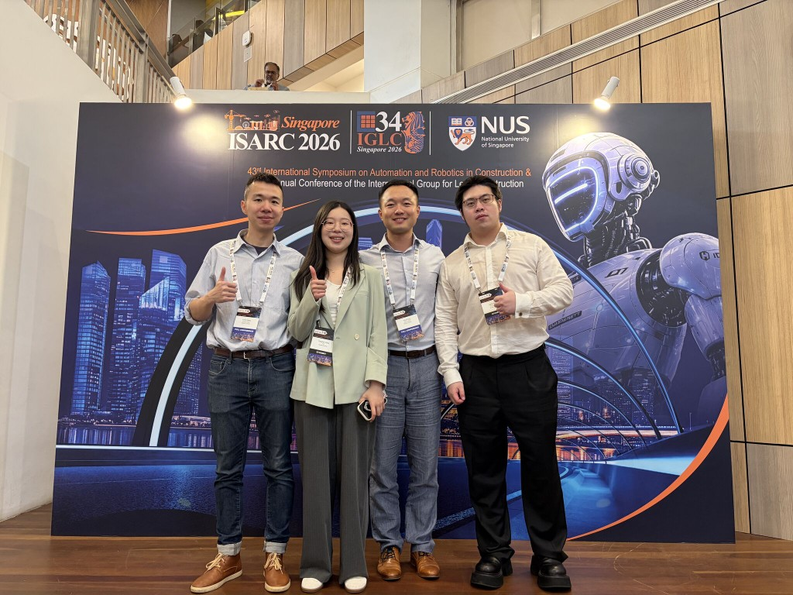
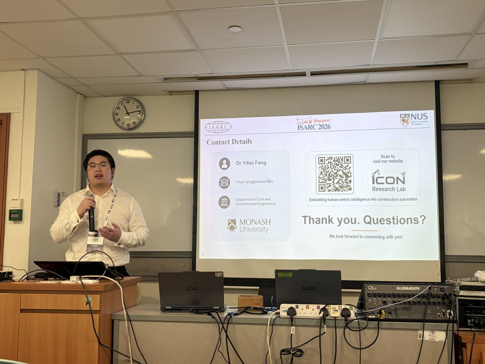
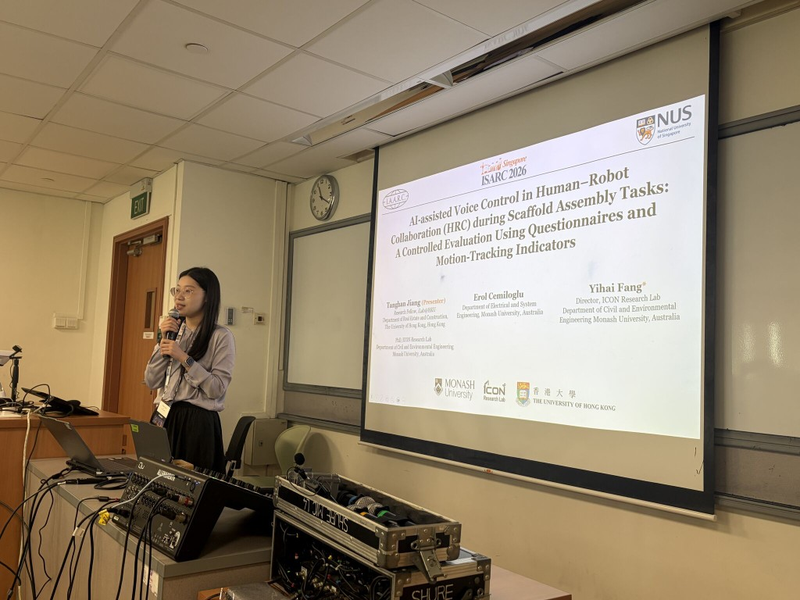
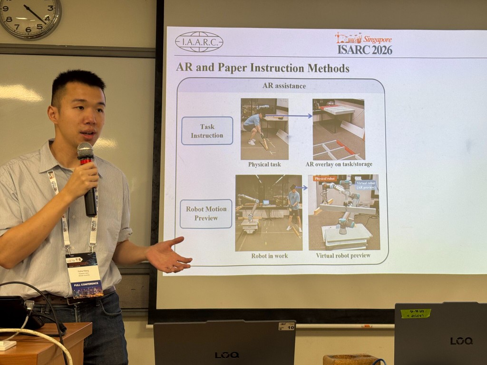
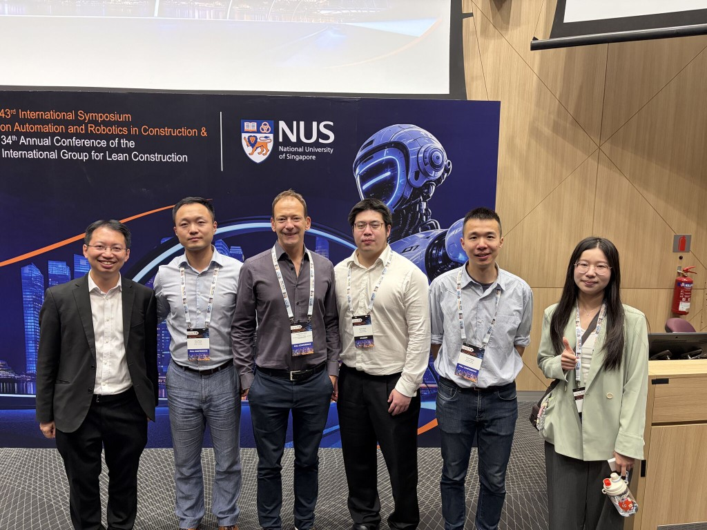

The ICON Research Lab was pleased to participate in ISARC 2026, the 43rd International Symposium on Automation and Robotics in Construction, held in Singapore and hosted by the National University of Singapore. ISARC is one of the key international conferences in automation, robotics, and digital technologies for the construction sector, bringing together researchers and practitioners working across construction robotics, sensing, digital twins, human–machine interfaces, automation systems, and smart construction. The 2026 conference theme was “Constructing the Future: Sustainable, Smart, and Lean.”

This year’s conference was a strong highlight for the Monash Department of Civil and Environmental Engineering and the ICON Research Lab, with four papers presented by our team at ISARC 2026. These contributions reflect the lab’s continuing research efforts in construction robotics, human–robot collaboration, AI-assisted construction automation, and intelligent task planning.
The four papers presented were:
- Knowledge Graph-Driven Reasoning for Automated Crane Lift Monitoring
- AI-assisted Voice Control in Human-Robot Collaboration during Scaffold Assembly Tasks: A Controlled Evaluation Using Questionnaires and Motion-Tracking Indicators
- Enhancing Human-Robot Collaboration Through Augmented Reality Guidance: A Phase-Based Evaluation
- Attention-Based Deep Reinforcement Learning for Task Sequence Optimization of Robotic Connection Operations
Across these studies, our researchers explored how emerging technologies, including knowledge graphs, AI-assisted voice interaction, augmented reality, and deep reinforcement learning, can support safer, more efficient, and more intelligent construction operations.




ISARC 2026 also provided a valuable opportunity for our team to reconnect with colleagues, meet collaborators and co-authors, and exchange ideas with researchers working in related areas of construction automation, robotics, and human–robot collaboration. The event was especially meaningful for the ICON Research Lab, with multiple presentations showcasing the breadth of our current work and creating new opportunities for future discussions and collaborations.
We thank the ISARC 2026 organisers for hosting such a valuable international event and look forward to continued engagement with the automation and robotics in construction research community.